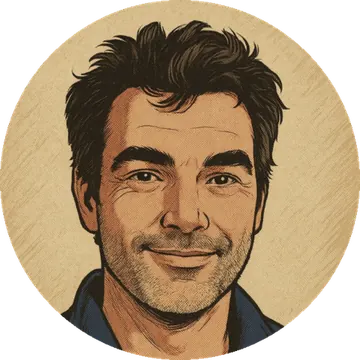

Vous croyez ne plus rien ressentir. Vous êtes las.
Pour les dirigeants et entrepreneurs qui tiennent coûte que coûte — souvent en mode automatique.
L'envie n'y est plus, et plus grand-chose ne bouge.
Vous continuez par habitude, par obligation, par devoir parfois ou simplement parce que vous ne savez pas faire autrement.
Vous avez l'impression de ne plus rien vouloir, parfois même de ne plus rien éprouver. D'être devenu un robot, un automate, un maillon.
Vous dites oui parce que c'est plus simple, et vous ne savez plus quand vous avez dit un véritable non pour la dernière fois.
Vous ne savez plus où vous allez, et les vraies décisions — celles qui sont pour vous — vous pèsent.
Pourtant, ce que je constate le plus souvent : l'émotion, l'énergie, la passion sont encore là.
Souvent en veilleuse, sous des couches de « il faut », « je dois », « ce serait bien si », « je serais heureux quand ». Elles ne sont plus nommées, c'est tout.
Et on ne peut piloter que ce qu'on peut nommer.
Ce n'est pas un problème de performance. C'est souvent un problème de course à la performance — celle pour laquelle on ignore, on dépasse, on efface ses propres limites, jusqu'à ne plus les (re)connaître.
On nous a appris à les cacher, à les traiter comme des faiblesses.
Elles sont l'inverse : identifiées, acceptées puis posées, elles libèrent l'espace qui permet à nos forces de s'exprimer pleinement.
Ce que mes clients retrouvent
Une reconnexion à leurs émotions, à leur énergie vitale, à leurs envies — à eux-mêmes. En quelques mois, ils recommencent à identifier ce dont ils ont envie, pour eux. À connaître ce qui les recharge. À poser leurs limites. À se remettre en vie.
« J'ai beaucoup apprécié que son travail prenne le contexte global de la personne — perso et pro. Cela m'a menée à trouver ma place. »
Comment on y va
Je travaille par et avec les émotions. Pendant mon parcours de certification, on m'a donné un nom : le veilleur — celui qui garde la flamme. C'est ce que je fais en séance : je vous aide à remettre de la lumière sur ce que vous ne regardez plus, en trois temps.
1. La retrouver.
Le feu n'est pas éteint : petit, faible, parfois en veille mais toujours là.
On part de ce que vous ressentez, de ce que vous vivez, pas de ce que vous devriez faire.
Sous le besoin d'être accepté, de faire plaisir, de tenir le rôle, il y a une envie qui est la vôtre. Je vous accompagne pour la voir, l'identifier, la nommer.
2. La protéger du vent.
C'est le cœur du travail. Chaque situation, chaque relation, chaque engagement vous apporte de l'énergie, de la joie — ou vous en coûte. On fait le bilan, poste par poste : déficitaire, neutre, excédentaire. Puis on décide — vous séparer de ce qui coûte, garder ce qui vous enrichit. C'est là que les limites se dessinent, puis se posent, une décision après l'autre. Et la chaleur commence à revenir.
Accepter ses limites, c'est accepter d'être soi-même limité.
3. Lui donner de l'air.
Les premières limites posées, la flamme peut grandir. C'est le temps de la libération : du souffle, une direction qui est la vôtre, et l'audace d'avancer avec vos forces et vos limites.
« Henri m'a accompagnée dans un moment que j'ai surnommé le « tsunami ». Il m'a aidée à diagnostiquer la situation, à acter des choix — alors que ma carte mentale créait des dizaines de scénarios — et à en assumer la responsabilité. Il m'a donné de la force, et de la douceur aussi. »
Le cadre
12 séances d'une heure et demie, sur six mois en général — jusqu'à douze selon votre rythme. Un cadre fixe, un contenu qui est le vôtre.
D'où je parle

Vingt-cinq ans d'entrepreneuriat : grands groupes, puis co-fondateur de plusieurs start-up.
Je suis veuf, après une longue maladie ; j'ai perdu ma mère quelques mois plus tard. Je suis papa solo d'un garçon de huit ans.
Entrepreneur, mari, fils, père — tout en même temps, et pas toujours dans cet ordre. Je sais ce que c'est de tenir en mode automatique, longtemps.
Coach certifié Entreprenance Institut, l'école de la dimension humaine de l'entrepreneuriat.
« Son accompagnement m'a permis de rester en mouvement dans un moment de tempête professionnelle : garder le discernement pour sortir d'une relation toxique, en restant aligné avec mes valeurs. Sans ce soutien, ça aurait été plus dur, plus long, avec plus de casse humaine et financière. »
La suite
Un appel de 30 minutes, sans engagement, pour voir si ce travail est le bon pour vous.
Réserver un créneauDeux lignes sur votre situation suffisent. Téléphone ou visio, au choix.